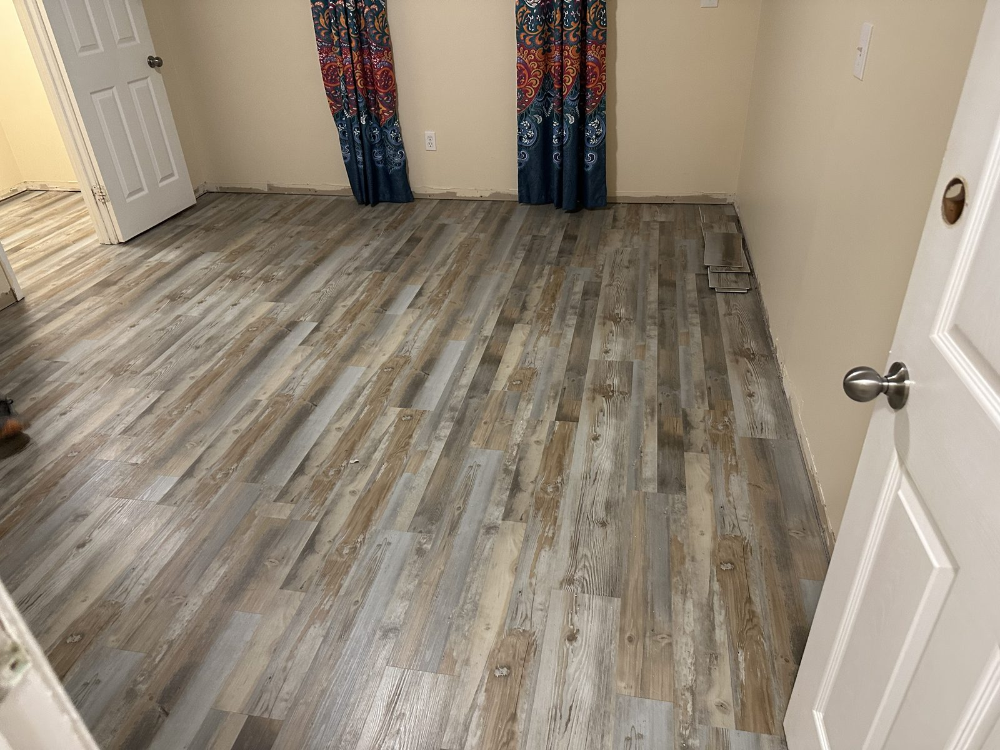

★★★★★
“Jimmie did a great job painting/ epoxy my garage floor. He also pressure washed my house and driveway. Great job and great price! I highly recommend this company.”
A clear, flexible topcoat for compatible VCT, linoleum and sheet or plank vinyl—designed to help resist wear, scuffs and everyday stains while reducing repeated strip-and-wax maintenance.

Rockhard Clear Coat T900 is a solvent-based, flexible clear topcoat made for resilient flooring. It forms a thin protective layer over a compatible surface while allowing the floor’s existing color and pattern to remain visible. The manufacturer offers gloss, satin and matte finishes.
The coating is designed to add wear, abrasion, scratch and impact resistance. It also helps protect against scuff marks, acid etching, and stains from food and beverages. It is scratch-resistant, not scratch-proof, so normal care still matters.
T900 is not a universal clear coat. We do not present this service as a coating for concrete, hardwood, ceramic tile or laminate. JW first identifies the floor, checks its condition and tests an inconspicuous area before recommending the system.
Busy floors collect dull traffic lanes, chair and shoe scuffs, and stains around entries, kitchens and work areas. T900 is designed as a virtually invisible protective barrier between that daily wear and the flooring underneath. On suitable VCT and resilient floors, it can also reduce the repeated stripping and waxing associated with conventional floor finish.
A clear coating cannot hide damage that is already in the floor. Deep scratches, stains, loose tiles and failed seams need to be addressed before coating because they will remain visible underneath the clear finish.
We confirm the flooring type, look for loose material or damaged seams and identify wax, polish, cleaner residue or another coating that could interfere with adhesion.
The surface must be sound and thoroughly clean. Existing buildup and contaminants are removed with methods appropriate for the floor. Any repair or extra stripping is listed in the written quote.
An inconspicuous test area checks adhesion, appearance and compatibility. We also confirm the requested gloss, satin or matte look before coating the full area.
T900 is solvent-based, so ventilation, protective equipment and controlled application conditions are part of the job. The area stays closed while the coating cures according to the manufacturer’s requirements and the conditions on site.
Before the floor goes back into service, JW explains the cure window and provides care directions that suit the finished floor. Good maintenance helps the protective layer do its job longer.
Square footage is only the starting point. The floor type, amount of old wax or finish, needed repairs, furniture and fixture access, selected sheen and the time available to keep the area closed all affect the work. Your quote names the preparation, coating system and planned number of coats before the job begins. Product availability is confirmed before scheduling.
Have VCT, linoleum or vinyl flooring that is getting harder to maintain? Call (904) 533-7260 and tell us what kind of floor you have, the approximate size and what is currently used on it.
Product scope and performance details are based on the Rockhard T900 Technical Data Sheet from Xtreme Polishing Systems.
“Jimmie did a great job painting/ epoxy my garage floor. He also pressure washed my house and driveway. Great job and great price! I highly recommend this company.”
“Excellent work. Would use again. Jimmy did and outstanding job on the garage. He was very punctual, professional and at a great price .…”
“I am so pleased with my house painting!! I plan to go to Jimmy for my flooring. He and his crew were extremely professional and so kind”
Call (904) 533-7260 and describe the floor, the rooms and what is on the surface now.